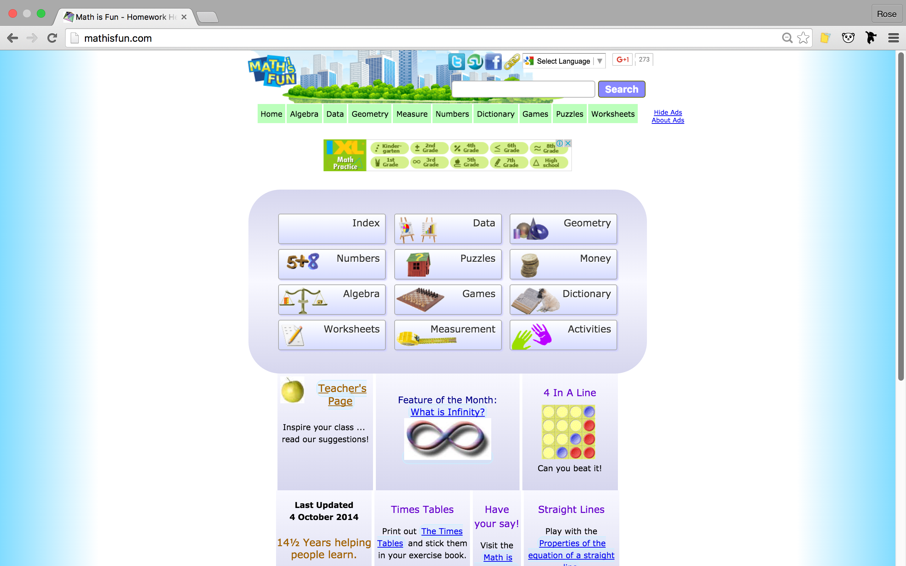
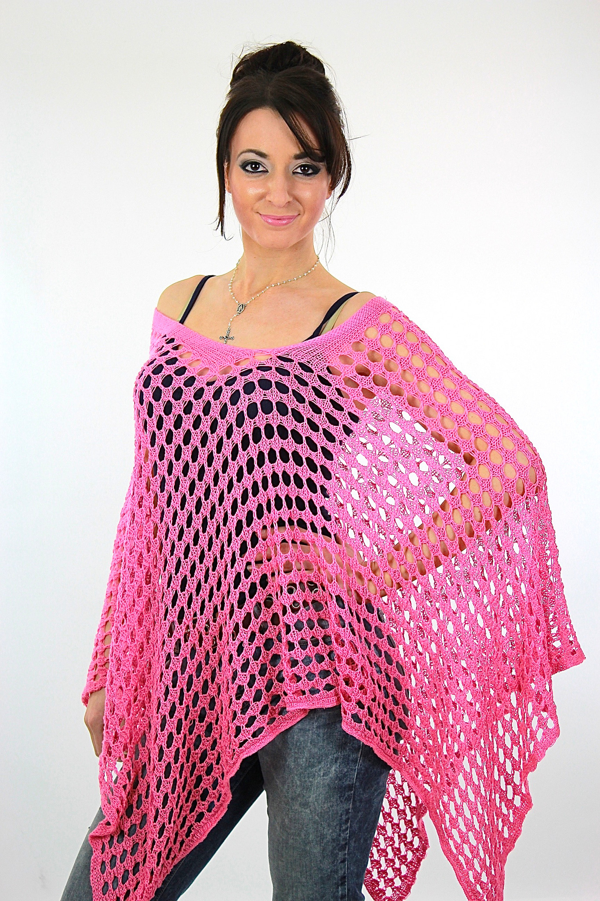

Good Design vs. Bad Design
A comparative inquiry of designs based on Ten Principles of Good Design by Dieter Rams.
A comparative inquiry of designs based on Ten Principles of Good Design by Dieter Rams.
As a middle school Mathematics teacher, I look for resources that students can use to further their learning. Luckily, there are many websites to choose from. I noticed that the likelihood of a student using a website is contigent on the understandability of its design.
Khan Academy is a popular resource for students to use, and that is largely because of the quality of its design. It is clear that Khan Academy was empathetic to the needs of the site’s visitors when creating the homepage; it is simple and self-explanatory. No tutorial was necessary when introducing it to my students, and I know that is the sign of a resource that considered the needs of my students in order to make it understandable. There is no reason to hesitate when moving through the website because the navigation and layout are consistently clear and convenient. There are common themes and categories used in the website, and students are able to be independent learners.
While Math Is Fun provides useful information for the students, the design of the site often leaves students lost. While the homepage lists topics, they are not separated with consideration for the students. If someone is looking for an article, they need to navigate through many different levels of difficulty which is extremely difficult to do with the site’s current structure. From the homepage onward, it lacks focus and is difficult for students to understand. I often find students typing “(math topic) mathisfun” into Google to search for content on the website. If the site’s design was as helpful as the content within it, my students would certainly use it more often.
I found applying design principles to movie posters very interesting. The two areas that I found most helpful to focus on in my search were the simplicity and timeless nature of the posters.

This movie poster has a clear design that draws the audience in. The intensity of the situation is heightened because it is instantly understood because of the simplistic design. A movie poster’s goal is to ignite intrigue, and the clarity of this poster certainly does that. Its style is also versatile enough to not be instantly dated by the viewer. I think the clear and to the point structure is timeless.
I think this poster has an unneccessary amount of details that do not capture the audience’s attention. The bright colors and unrelated images are instantly confusing and irrelevant for anyone who has not seen the movie yet. This is who should be target audience of this poster. The patterns and text style make it something that could only exist in the time period it was created in.
When comparing clothing items, aesthetics are a major consideration, however, I found it interesting to consider two other principles when comparing clothing items: usability and how unobstrusive they are.
Hoodies are worn by many people of various ages, and this might be a result of their usability. They are decorated with helpful elements that make them useful beyond providing warmth. People who wear sweatshirts wear them casually and could benefit from a head covering and large pocket during these situations. They are not obtrusive and have elements that could be helpful. Hoodies are an improvement on a basic sweater and this has led to their widespread usage.
Sacrificing usability is common in fashion, but an unreasonable amount of compromising needs to take place in order to complete tasks while wearing this. The arms are constricted and it’s difficult to see how the poncho could be repositioned for functionality. I can imagine that it would be extremely obtrusive to wear. I am guessing that it was originally designed with comfort in mind because of the material, but the structure of the piece shows a lack of consideration for the consumer’s needs.